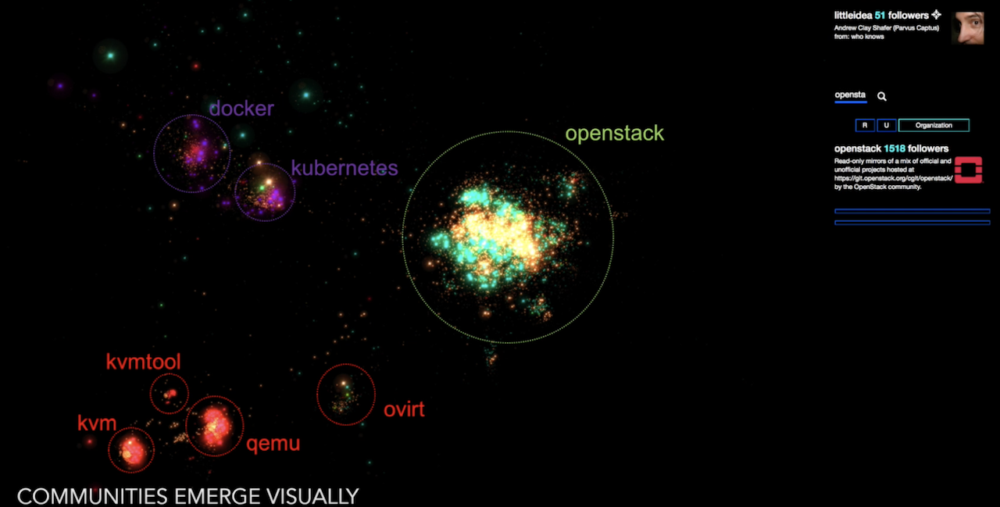
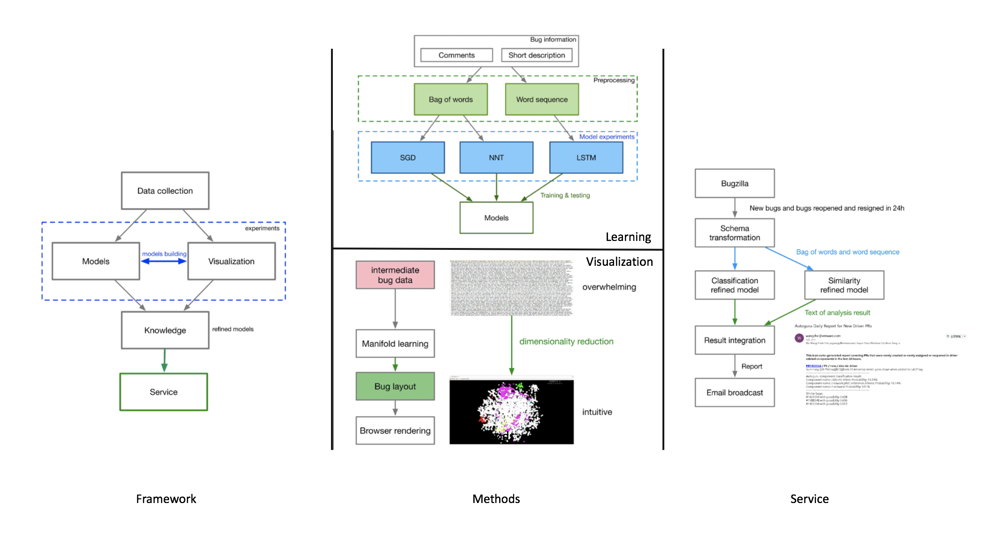
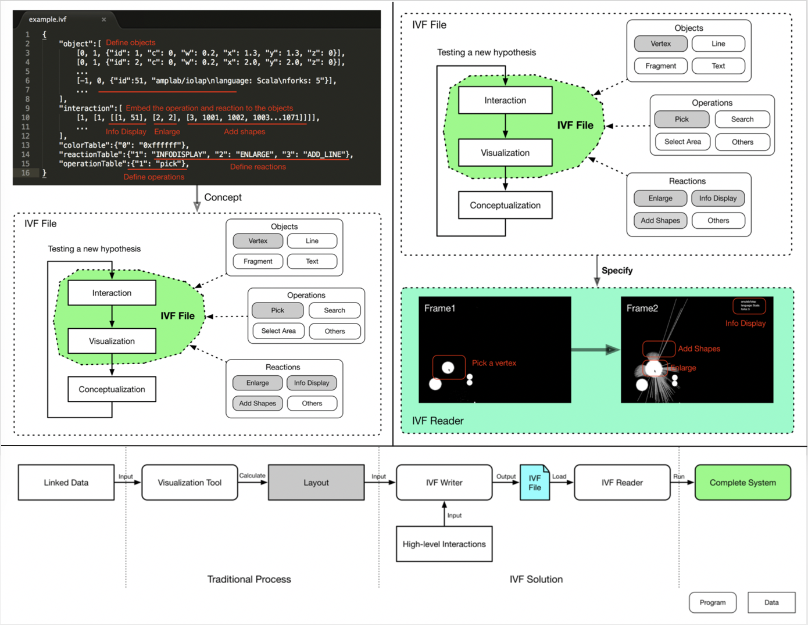
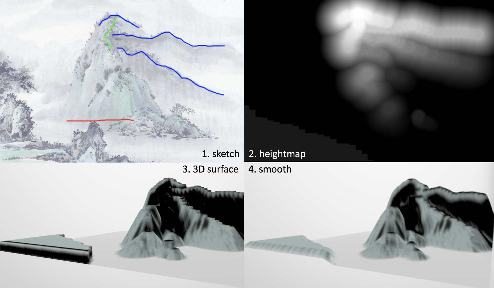

Student in Washington University in St. Louis.
Washington University
Ph.D. Computer Science, 2018 - Present
Beijing Normal University
M.S. Computer Science, 2015 - 2018
Wuhan University
B.E. Eletrical Engineering, 2011 - 2015
Hello, I’m Zhe Wang, a Ph.D. student in Computer Science at Washington University. I graduated from Beijing Normal University with M.S. in Computer Science and Wuhan University with B.E. in Electrical Engineering. In addition, I have four years of R&D experience with WMware Internship during academic breaks.
With my expanding technology stack, my constant curiosity has triggered different approaches meeting various urgent needs from the real world. I have implemented web-based, visual-based, interactive and distributed systems contributing to Open Innovation, Software Engineering, Cultural Heritage Preservation, Space Physics, Medical Imaging.
Open-source communities are vibrant and dynamic. There are millions of projects and contributors. It is hard to comprehend the whole picture of the landscape to understand the current structure, history and trend of various communities and interconnections among them. It will be hard for new participants to zero in new innovations and identify existing high quality projects. It will be greatly beneficial if there are some exploratory tools to survey and examine current landscape of the overall open source projects and communities.To address this challenge, we create the project Open Compass.
Open Compass is the first online interactive map of the open source project repositories and their developers. The proximity among repositories and developers can be intuitively viewed as the visual distance. The closer the visual distance between the parties, the stronger connection among them. In this way, various open source domains can be transparently understood by observing their clusters and distributions, and insights can be heuristically achieved by explorations in the maps.

With the development of AI techniques, such as statistical machine learning (M/L), deep learning and visual analytics, great opportunities emerge in software engineering to reduce effort and save cost. Since the data on which these techniques rely heavily is domain-specific, existing experience of usage can not be referred directly. How to bridge the gap between these state-of- the-art techniques and VMWare software production is significant.
Therefore, our starting point is building an automatic analyzer to accelerate the procedure of bug identification, and our intention is not only to explore how to utilize fruits of AI techniques but also to identify gaps between intermediate data of productions and prerequisites of the state-of-the-art techniques.

Interactive information visualization is becoming increasingly important. It can be used for large network system management like IoT system with billions of nodes. The requirement of seamless highly interactive user experience to explore the data is essential to such visualization systems.
Therefore, our starting point is building an automatic analyzer to accelerate the procedure of bug identification, and our intention is not only to explore how to utilize fruits of AI techniques but also to identify gaps between intermediate data of productions and prerequisites of the state-of-the-art techniques.

With the increasing need for 3D Chinoiserie scene in educations and entertainments, introducing Chinese Painting to 3D Chinoiserie scene modeling is significant, since Chinese Painting typically embeds Chinese culture with various elements. As the landscape painting is a typical genre, we focus on modeling 3D Chinoiserie landscape scene. And we devise a system which semi-automatically embeds Chinese landscape painting into 3D landscape scene.
ChinesePainting3D is the first system focusing on 3D landscape scene modeling with Chinese Painting. By considering foreground and background respectively, landscape paintings are transferred into a 3D scene with three steps. Firstly, the 3D background is generated by mapping the terrain of landscape paintings into the height map. Secondly, the 3D foreground is constructed by data-driven methods. With the collected 3D model database and the learned semantic information from landscape paintings, multiple 3D models are searched, recombined and placed. Finally, a novel texturing method is developed for adapting the naive scene to a textured scene with retaining Chinese monochromes characteristics.

[1] Wang Z, Zhao S, et al. Cerebral Vessel Segmentation based on Adaptive Clustering Centers[C]// ChinaVR, 2017.
[2] Ren P, Fan Y, Zhou M, Wang Z, Du G, Qian L. Rapid three-dimensional scene modeling by sketch retrieval and auto-arrangement[J]. Computers & Graphics, 2017, 64:26-36.
[3] Ren P, Zhou M, Wang Z, et al. A Probabilistic Model for Traditional Chinese Architecture[C]// International Conference on Virtual Reality and Visualization. IEEE, 2017:411-417.
[4] Ren P, Wang Z, Fan Y, et al. A Rapid Modeling Method for 3D Architectural Scene[C]// International Conference on Cyberworlds. IEEE Computer Society, 2016:9-16 (Best Paper Award).
[5] Wang Z, Ma Q J, Shen C, et al. Research on Visualization of Characteristic Parameters of Ionosphere[J]. Applied Mechanics \& Materials, 2014, 614:676-680.